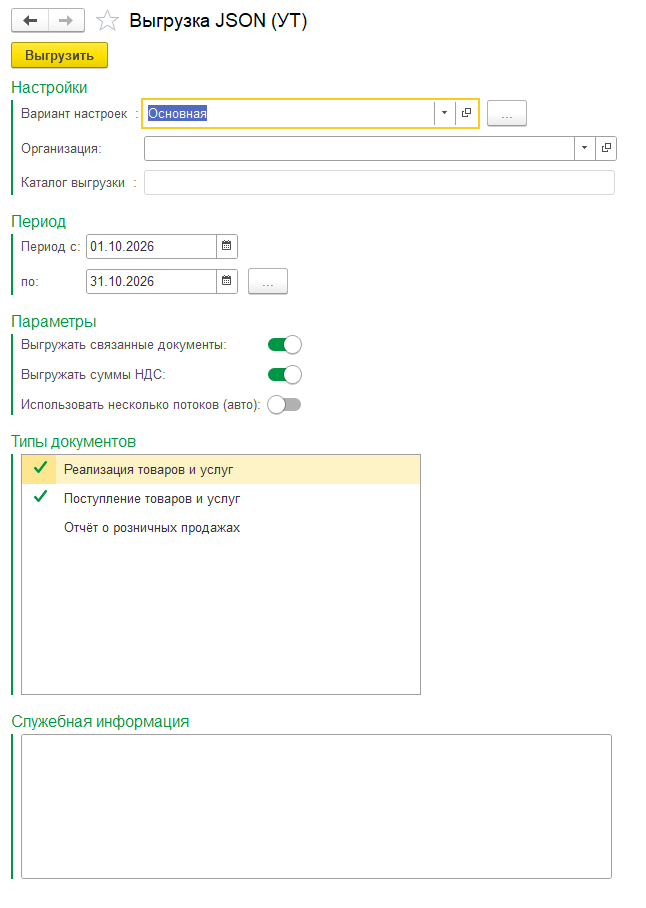
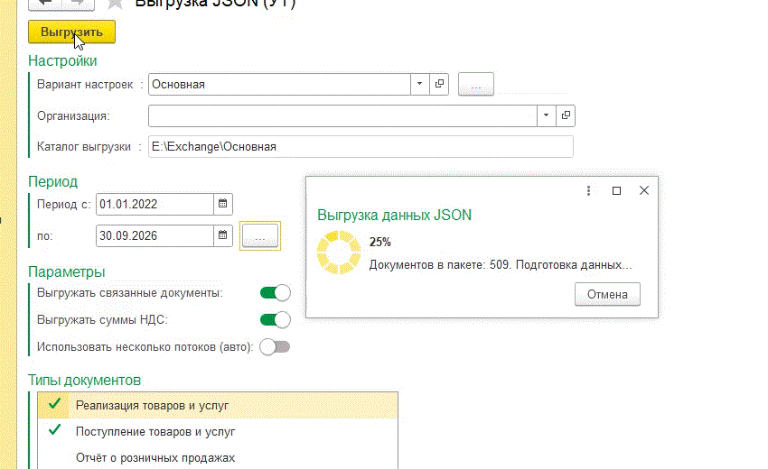
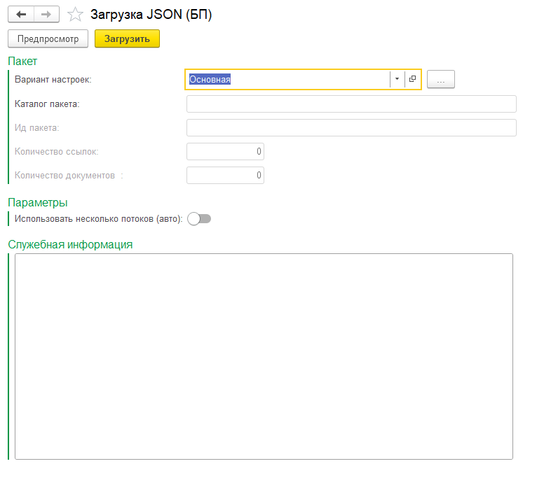
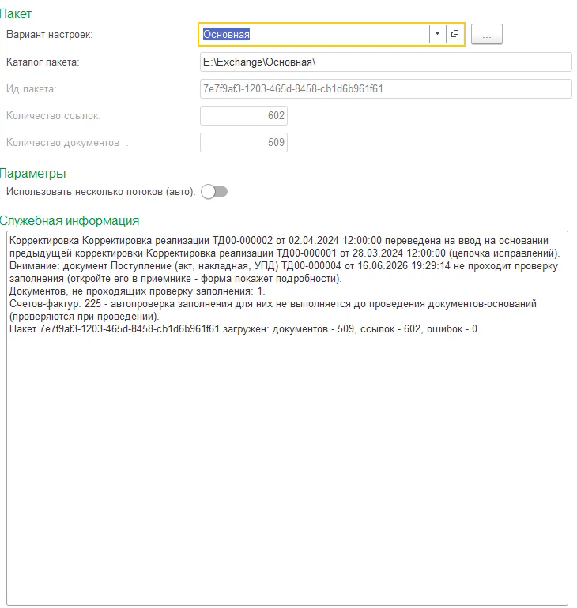
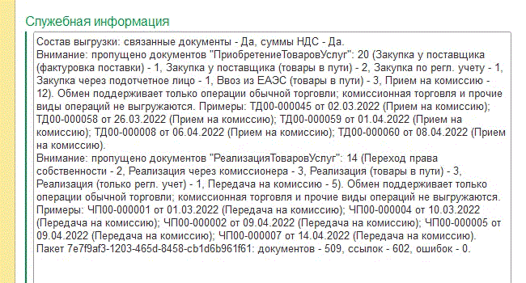
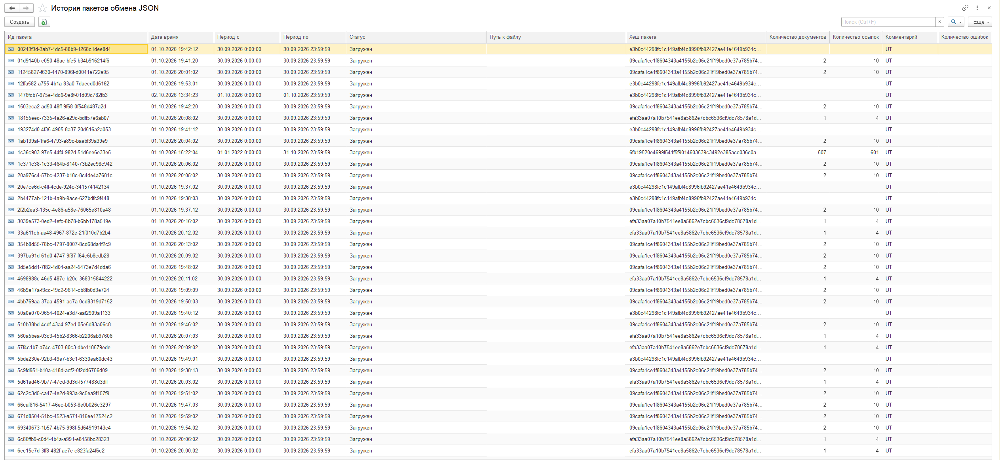

Что переносится What is transferred
- Реализации товаров и услуг Sales of goods and services
- Поступления (приобретения) товаров и услуг Purchases of goods and services
- Счета-фактуры выданные и полученные, включая корректировочные Issued and received invoices, including corrective ones
- Корректировки реализаций и поступлений Sales and purchase adjustments
- Отчёты о розничных продажах (ОРП) — отдельный контур настроек Retail sales reports — a separate settings contour
Связанные документы (например, счёт-фактура к реализации) попадают в пакет автоматически. Related documents (for example, an invoice linked to a sale) are included in the package automatically.
Возможности Features
-
01
Ручной и регламентный режим. Обработки «Выгрузка» и «Загрузка» с фоном и прогрессом; расписание ежедневно, отдельные задания для основного контура и ОРП. Manual and scheduled modes. “Export” and “Import” tools with background run and progress; daily schedules, separate jobs for the main contour and retail.
-
02
Большие объёмы. Многопоточная подготовка и загрузка включается по объёму, порог настраивается — или принудительно один поток. Large volumes. Multi-threaded preparation and loading is enabled by volume with a configurable threshold — or forced single-threaded.
-
03
Без дублей. Повторная загрузка пакета не создаёт дубли: соответствия «источник → приёмник» сохраняются. No duplicates. Re-loading a package does not create duplicates: source → target mappings are stored.
-
04
Качество данных. Цепочки корректировок, корректировочные счета-фактуры, расчёты в условных единицах, автоматическая проверка заполнения после загрузки. Data quality. Adjustment chains, corrective invoices, currency-unit settlements, automatic validation of loaded documents.
-
05
Контроль. Протокол по каждому запуску — состав, документы, ошибки, предупреждения; «История пакетов». Control. A protocol for every run — content, documents, errors, warnings; plus package history.
-
06
Права и роли. Отдельные роли для «Основной» и «ОРП», работа под ограниченными пользователями. Access rights. Separate roles for the main contour and retail; works for restricted users.
Как работает How it works
-
В базе-источнике документы за период сериализуются в пакет JSON:
manifest.json,documents.jsonl,references.jsonl. In the source database documents for the period are serialized into a JSON package:manifest.json,documents.jsonl,references.jsonl. - Пакет записывается в каталог обмена — локальную папку или сетевой ресурс, доступный серверу 1С. The package is written into the exchange folder — a local path or a network share available to the 1C server.
- В БП новые пакеты обнаруживаются и загружаются: создаются справочники (при необходимости) и документы, связи запоминаются. In the target database new packages are detected and loaded: reference items (when needed) and documents are created, mappings are stored.
- Документы готовы к проверке и проведению; протокол показывает результат. Documents are ready for review and posting; the protocol shows the result.
УТ / КА / ЕРП UT / KA / ERP
источник · 11.5 / 2.5 source · 11.5 / 2.5
- расширение источникаsource extension
- «Выгрузка», регламент“Export”, schedules
- история пакетовpackage history
Каталог обмена Exchange folder
пакет на каждый обмен one package per exchange
- manifest.json
- documents.jsonl
- references.jsonl
БП 3.0 BP 3.0
приёмник · 3.0 target · 3.0
- обработка «Загрузка»“Import” tool
- документы и справочникиdocuments and reference items
- сопоставление без дублейmatching without duplicates
Каталог — локальная папка или сетевая, доступная учётной записи службы сервера 1С. Прямое соединение между базами не требуется. The folder is local or a network share available to the 1C server service account. No direct database connection is required.
Скриншоты Screenshots






Видео-демо Video demo
Цены Pricing
Подписка «Стандарт» — одна база-источник (УТ, КА или ЕРП) и одна база БП. В стоимость входят обновления под новые релизы типовых конфигураций и поддержка совместимости. The “Standard” subscription covers one source database (UT, KA or ERP) and one BP database. Updates for new standard configuration releases and compatibility support are included.
- Дополнительная база БП (партнёры, филиалы), 12 месяцев Additional BP database (partners, branches), 12 months 30 000 ₽
- Тариф «Сеть» — для сетей и холдингов, 12 месяцев “Network” plan for groups and holdings, 12 months 150 000 ₽
- Продление на 12 месяцев, −20 %: «Стандарт» / доп. база БП / «Сеть» 12-month renewal, −20%: Standard / extra BP database / Network 48 000 / 24 000 / 120 000 ₽
- Демо-режим Demo mode бесплатно, 3 дня free, 3 days
- Техподдержка Technical support первый месяц бесплатно, далее 4 500 ₽/час first month free, then ₽4,500 per hour
Требования, состав, ограничения Requirements, deliverables, limitations
Требования Requirements
- 1С:Предприятие 8.3.27+ (серверная или файловая база) 1C:Enterprise 8.3.27+ (server or file infobase)
- Источник: УТ 11.5, КА 2.5 или ЕРП 2.5 (проверено на 11.5.27.101 / 2.5.27.101); УТ 11.6 — в плане Source: UT 11.5, KA 2.5 or ERP 2.5 (verified on 11.5.27.101 / 2.5.27.101); UT 11.6 is planned
- Приёмник: БП 3.0 (проверено на 3.0.209.16) Target: BP 3.0 (verified on 3.0.209.16)
- Каталог обмена, доступный серверу 1С Exchange folder accessible to the 1C server
Состав поставки What you get
-
Расширение-источник (
.cfe) для УТ, КА или ЕРП Source extension (.cfe) for UT, KA or ERP -
Расширение для БП 3.0 (
.cfe) Extension for BP 3.0 (.cfe) - Руководство по установке и настройке, описание решения, FAQ Installation and setup guide, solution overview, FAQ
Ограничения Limitations
- Документы создаются без проведения — проведение выполняет пользователь Documents are created unposted — the user posts them
- Направление обмена: источник (УТ/КА/ЕРП) → БП; обратный поток не входит в поставку Direction: source (UT/KA/ERP) → BP; the reverse flow is not included
- Обмен файловый, через каталог — это осознанное решение: работает в закрытых контурах и на разных серверах File-based exchange through a folder by design: works in closed environments and across servers
Условия лицензии License terms
- Ключ оформляется на организацию (ИНН) и активируется и в базе-источнике, и в базе БП The key is issued per company (tax ID) and activated in both the source and the BP database
- Если в базе несколько юрлиц — ключ нужен на каждое If a database holds several legal entities, each needs its own key
- Демо-режим: 3 дня с первого запуска, период выгрузки до 14 дней, до 25 документов в пакете Demo mode: 3 days from the first run, export period up to 14 days, up to 25 documents per package
- Подписка включает обновления под новые релизы типовых конфигураций и поддержку совместимости The subscription includes updates for new standard releases and compatibility support
Подобрать состав и узнать условия Get a quote and the terms
Напишите, какие конфигурации и релизы используются и сколько баз БП — помогу с демо, лицензией и внедрением. Демо-режим включается без ключа и бесплатно. Tell me which configurations and releases you run and how many BP databases you have — I will help with the demo, licensing and rollout. The demo runs without a key and free of charge.